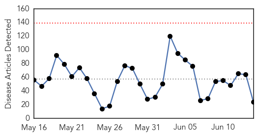

30 Day Trends
Web: 0 alerts, 0 warnings
Twitter: 0 alerts, 0 warnings
Top Articles:
- 0.997
- First MERS death in Algeria
- 0.987
- Local residents say ticks are overabundant this year
- 0.959
- Additional Birmingham Patient Tests Positive for Legionella
- 0.954
- Malaria death toll in Tripura rises to 21
- 0.950
- Legionnaires' case confirmed in Wilson County
- 0.917
- Chicago Tribune
- 0.917
- Chicago Tribune
- 0.917
- Chicago Tribune
- 0.917
- Chicago Tribune
- 0.917
- Chicago Tribune
- 0.917
- Chicago Tribune
- 0.917
- Chicago Tribune
- 0.917
- Chicago Tribune
- 0.917
- Chicago Tribune
- 0.917
- Chicago Tribune
- 0.899
- Virus threat to keep pigs from Big Butler Fair
- 0.893
- Lyme disease needs research
- 0.883
- Officials: 2 cases of new virus in Rhode Island
- 0.867
- Three health workers suspended in Tripura
- 0.866
- Ukraine promises "adequate response" over shot-down plane
- 0.866
- Forty-nine Ukrainian troops killed in plane shot down by rebels
- 0.862
- Lawyer calls for investigation into salmonella outbreak at Heartlands Hospital
- 0.833
- Big Data Help Battle Flu Outbreaks
- 0.722
- Concerned Over Mad Cow Disease, Missouri Slaughterhouse Recalls Over 4,000 Pounds Of Beef
Top Tweets:
- 0.908
- “The total number of cases is subject to change due to reclassification retrospective investigation consolidation of cases… 1/2 MERS
Web/News Articles
Tweets

Article Locations

Article Confidences